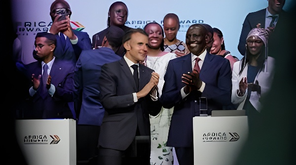

Les 11 et 12 mai 2026, la capitale kényane a accueilli le sommet Africa Forward, co-organisé par la France et le Kenya. Premier sommet Afrique–France tenu en dehors du monde francophone, il a réuni une trentaine de chefs d'État, près de 7 000 participants économiques et s'est conclu par 23 milliards d'euros d'engagements d'investissement. Derrière l'ambition affichée d'un « partenariat d'égal à égal », le sommet révèle autant les limites de l'influence française sur le continent que la montée en puissance d'une Afrique qui entend désormais dicter ses propres termes.
Depuis 1973, les sommets Afrique–France se tenaient systématiquement dans un pays francophone. Le choix de Nairobi, deuxième économie d'Afrique de l'Est, hub technologique et financier régional, marque une rupture symbolique forte. Pour la première fois, l'événement est co-présidé avec un pays anglophone, en l'occurrence le Kenya du président William Ruto, dont l'économie affiche une croissance soutenue et un écosystème de startups parmi les plus dynamiques du continent.
Ce choix n'est pas anodin. Il signale la volonté de Paris de dépasser l'espace francophone en déclin — particulièrement après les revers subis au Sahel (Mali, Burkina Faso, Niger) — pour s'ancrer dans une Afrique de l'Est en plein essor. Nairobi incarne une Afrique urbaine, connectée, ambitieuse : précisément la cible d'image que recherche la diplomatie française après plusieurs années de défiance croissante dans sa zone d'influence traditionnelle.
Le sommet s'est articulé en deux journées distinctes. Le 11 mai, baptisé « Inspire and Connect », a été entièrement dédié au forum d'affaires : entrepreneurs africains et français, PME, start-ups et grandes entreprises se sont retrouvés à l'Université de Nairobi pour des sessions de matchmaking, d'ateliers sectoriels et de signature d'accords. La participation a largement dépassé les prévisions, avec près de 7 000 participants contre les 3 000 à 4 000 attendus.
Le 12 mai a été consacré aux questions de financement du développement et aux enjeux géopolitiques globaux, avec la participation des chefs d'État au Kenyatta International Convention Centre (KICC). Les échanges ont porté sur cinq axes prioritaires définis en amont avec les partenaires africains : les chaînes de valeur agricoles locales, la production régionale de produits de santé, les infrastructures numériques souveraines, le financement des transitions énergétiques, et le développement des infrastructures maritimes et portuaires.
Discours de Ouagadougou : Macron annonce la volonté de « refonder » les relations Afrique–France sur des bases nouvelles, en s'adressant directement à la jeunesse africaine.
Sommet sur le financement des économies africaines à Paris : adoption du principe de réallocation des droits de tirage spéciaux du FMI au profit des pays africains.
Sommet pour un nouveau pacte financier mondial à Paris : discussions sur la réforme des institutions financières internationales et la dette des pays du Sud.
Sommet Union africaine–Union européenne de Luanda : étape immédiatement préparatoire à Africa Forward, posant les bases d'un agenda commun de financement du développement.
Sommet Africa Forward à Nairobi : 23 milliards d'euros d'engagements, Déclaration de Nairobi, premier sommet co-présidé avec un pays anglophone. Les conclusions alimenteront le G7 d'Évian (15–17 juin 2026).
Le bilan financier du sommet est le chiffre qui retiendra le plus l'attention : 23 milliards d'euros d'engagements d'investissement, dont 14 milliards portés par la partie française et 9 milliards par la partie africaine. Ces annonces concernent des secteurs aussi variés que les infrastructures, l'énergie, le numérique et les technologies vertes. Le programme Choose Africa, qui a contribué à la création de plus de trois millions d'emplois depuis son lancement, sera renforcé, tout comme le fonds Digital Africa qui accompagne les start-ups du continent.
Mais ce chiffre appelle d'emblée une prudence analytique. La distinction entre engagements annoncés et investissements effectivement décaissés est un exercice auquel les observateurs sont rompus après des décennies de grandes messes diplomatiques africaines. Comme l'a sobrement résumé le président Ruto : « La véritable portée de ce sommet ne se mesurera pas à la force de nos discours. Elle se mesurera à la force de nos actes. »
Le sommet s'est conclu par l'adoption de la Déclaration de Nairobi, dans laquelle les dirigeants ont appelé à la définition d'un nouvel agenda continental axé sur trois priorités : l'indépendance financière, la croissance tirée par la technologie et l'industrialisation verte. Le texte insiste également sur la nécessité de soutenir la production locale de vaccins, de renforcer les systèmes de santé africains et de développer des infrastructures numériques souveraines.
Sur le plan diplomatique, Macron et Ruto ont été mandatés pour porter un « appel à l'action » des dirigeants africains devant le G7 d'Évian (15–17 juin 2026), notamment pour réduire les déséquilibres mondiaux affectant les économies du continent. Certaines conclusions du sommet nourriront ainsi directement la préparation de ce G7.
| Secteur | Priorité affichée | Mécanisme mobilisé |
|---|---|---|
| Entrepreneuriat | PME, start-ups, emploi jeunes | Choose Africa, Digital Africa |
| Santé | Production locale de vaccins | AFD, partenariats bilatéraux |
| Agriculture | Chaînes de valeur locales | Cofinancements publics-privés |
| Numérique | Infrastructures souveraines | Digital Africa, Bpifrance |
| Énergie | Transition énergétique | Proparco, banques dev. |
Dans la salle, les critiques ont été rares. Ceux qui avaient fait le déplacement étaient là pour nouer des partenariats, non pour débattre de la posture française. Mais en dehors du KICC, les réserves se sont exprimées avec clarté. Pour Rodrigue Ahégo, coordinateur national de « Tournons la page Togo », passer de l'aide au développement à l'investissement ne suffit pas : « Investir dans l'économie sans exiger des garanties sur les libertés publiques, l'alternance démocratique, la bonne gouvernance, c'est construire sur du sable. »
Plusieurs représentants de la société civile africaine ont également relevé une persistance du paternalisme dans l'attitude française. Mame Diarra Ndiaye Sobel, présidente de l'ONG sénégalaise Solidarité active, a rappelé que le « malaise grandissant » autour de certaines attitudes politiques mérite d'être entendu, indépendamment des annonces économiques.
« Le Kenya est fier d'avoir co-accueilli cette importante conversation ici à Nairobi. Mais la véritable portée de ce sommet ne se mesurera pas à la force de nos discours. Elle se mesurera à la force de nos actes. »
— William Ruto, président du Kenya, cérémonie de clôture, 12 mai 2026Africa Forward illustre les deux réalités simultanées de la relation franco-africaine en 2026 : la France dispose encore d'atouts réels — réseau diplomatique, présence économique, expertise financière — et d'une volonté visible de renouveler la forme de son engagement. Mais le terrain géopolitique s'est radicalement transformé. La Chine, la Russie, la Turquie, l'Inde et les Émirats arabes unis multiplient leurs offensives sur un continent qui a appris à mettre ses partenaires en concurrence. Les États africains, portés par des opinions publiques de plus en plus exigeantes et des jeunes générations qui récusent le paternalisme, imposent désormais leurs propres termes. L'enjeu pour Paris n'est plus de convaincre mais de livrer — concrètement, et à l'échelle des 23 milliards annoncés.